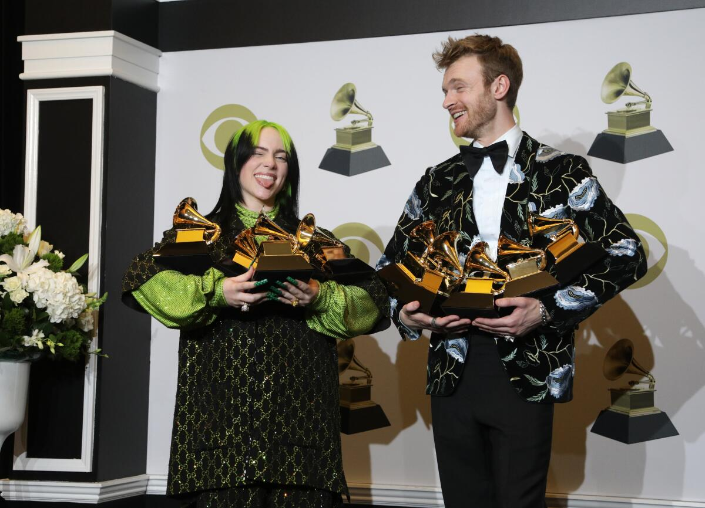

Billie Eilish is one of the most decorated artists of her generation, having amassed over 180 awards from nearly 500 nominations by early 2026. She has made history at the Grammy Awards with 10 wins, becoming the first person to win Song of the Year three times—for "Bad Guy" (2020), "What Was I Made For?" (2024), and most recently for "Wildflower" at the 2026 ceremony. Her legendary 2020 debut saw her sweep the "Big Four" categories in a single night: Best New Artist, Album of the Year (When We All Fall Asleep, Where Do We Go?), Record of the Year, and Song of the Year. Beyond music-specific honors, she is a two-time Academy Award winner, making her the youngest two-time Oscar recipient for her contributions to No Time to Die and Barbie. Her vast trophy collection also includes 20 Guinness World Records, 2 Golden Globes, 9 American Music Awards, 8 MTV Video Music Awards, and 4 BRIT Awards
